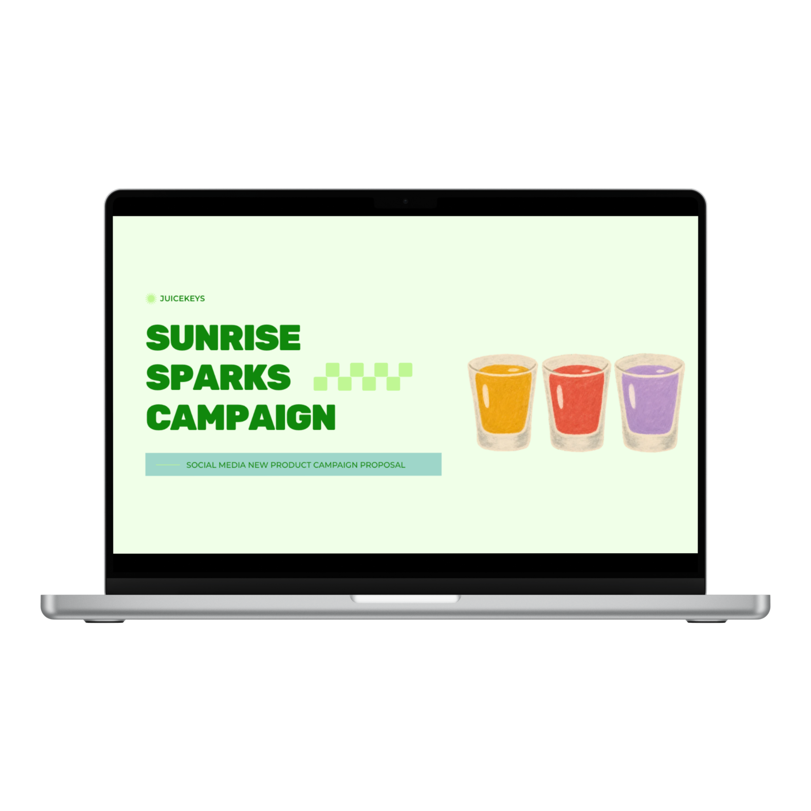

Juicekeys is a locally owned smoothie business in Raleigh, NC, founded by a pair of siblings. The business focuses on creating tasty, healthy smoothies for the community.
I created a mockup marketing campaign for Juicekeys centered around a hypothetical November product launch: Sunrise Sparks, a line of 2 oz. morning shots available in three flavors. Using free stock photos, I developed content ideas and a two-week content calendar to demonstrate how I would build awareness leading up to the launch and keep the audience engaged throughout the campaign. You can view the mockup campaign presentation above.
Through this project, I learned how to strategically plan content over a two-week period and develop a variety of content that keeps audiences engaged without overwhelming them.